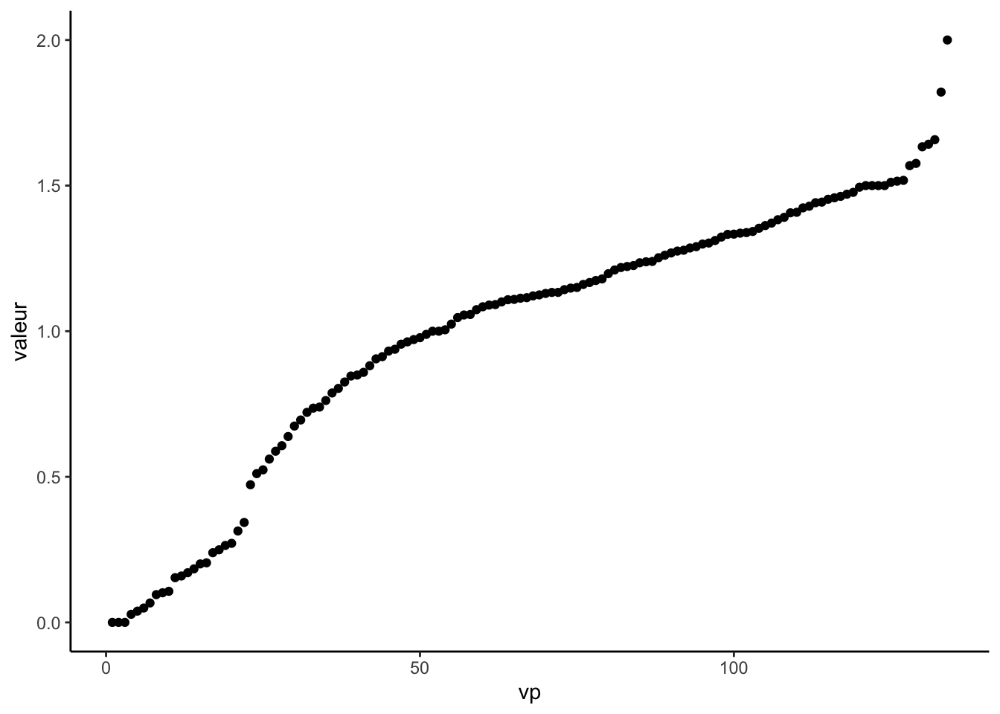
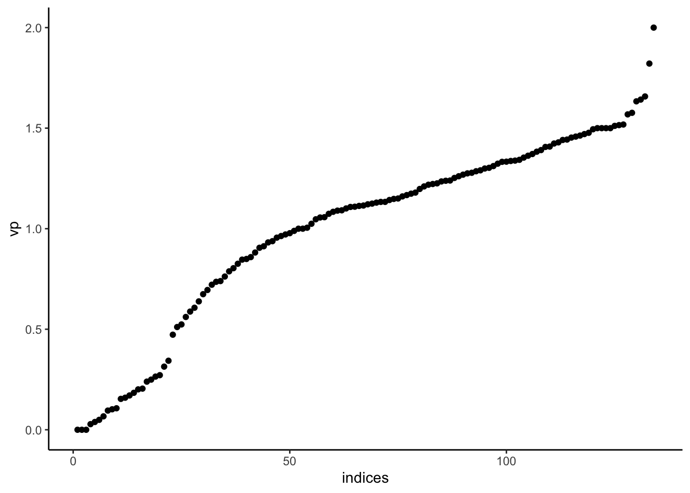
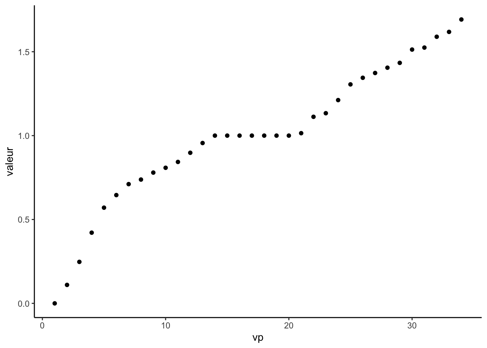

Chapitre 4 Clustering spectral
Le clustering spectral est un algorithme de classification non supervisé qui permet de définir des clusters de nœuds sur des graphes ou d’individus pour des données individus/variables. L’algorithme est basé sur la décomposition spectrale du Laplacien (normalisé) d’une matrice de similarité, il est résumé ci-dessous :
Entrées :
- tableau de données \(n\times p\)
- \(K\) un noyau
- \(k\) le nombre de clusters.
- Calculer la matrice de similarités \(W\) sur les données en utilisant le noyau \(K\)
- Calculer le Laplacien normalisé \(L_{\text{norm}}\) à partir de \(W\).
- Calculer les \(k\) premiers vecteurs propres \(u_1,\dots,u_k\) de \(L_{\text{norm}}\). On note \(U\) la matrice \(n\times k\) qui les contient.
- Calculer la matrice \(T\) en normalisant les lignes de \(U\) : \(t_{ij}=u_{ij}/(\sum_\ell u_{i\ell}^2)^{1/2}\).
- Faire un \(k\)-means avec les points \(y_i,i=1,\dots,n\) (i-\(ème\) ligne de \(T\)) \(\Longrightarrow\) \(A_1,\dots,A_k\).
L’objet de ce chapitre est de travailler sur cet algorithme en le programmant, puis en utilisant la fonction specc du package kernlab.
4.1 Clustering spectral sur 1 graphe à 3 composantes connexes
On crée tout d’abord un graphe avec trois composantes connexes : on utilise la commande sample_gnp() qui permet de créer un graphe selon le modèle d’Erdos-Renyi.
set.seed(1)
n1 <- 5
n2 <- 3
n3 <- 2
n <- n1+n2+n3
# il faut prendre des grandes valeurs de p sinon on risque d'avoir des sous-graphes non connexes
p1 <- 0.85
p2 <- 0.75
p3 <- 0.7
G1 <- sample_gnp(n1,p1)
G2 <- sample_gnp(n2,p2)
G3 <- sample_gnp(n3,p3)
G <- G1 + G2 + G3 # il cree un graphe avec ces 3 sous-graphes
plot(G)On vérifie le nombre de composantes connexes
Exercice 4.1 (Laplacien non normalisé)
Calculer la matrice d’adjacence de G et en déduire le Laplacien non normalisé.
Retrouver ce Laplacien avec la fonction laplacian_matrix.
Calculer les valeurs propres et représenter les sur un graphe. Que remarquez-vous ?
spec <- eigen(L) spec$values [1] 5.000000e+00 5.000000e+00 4.000000e+00 3.000000e+00 [5] 2.000000e+00 2.000000e+00 1.000000e+00 3.552714e-15 [9] 1.776357e-15 1.110223e-15 df <- tibble(vp=1:length(spec$values),valeur=rev(spec$values)) ggplot(df)+aes(x=vp,y=valeur)+geom_point()On observe bien le “trou spectral” (eigengap) entre la troisième et la quatrième valeur propre. Conformément à la théorie, l’ordre de multiplicité de la valeur propre 0 est égal au nombre de composantes connexes du graphe.
Obtenir les trois vecteurs propres associés à la valeur propre nulle. Commenter.
U <- spec$vectors[,n:(n-2)] U [,1] [,2] [,3] [1,] 0.0000000 0.0000000 -0.4472136 [2,] 0.0000000 0.0000000 -0.4472136 [3,] 0.0000000 0.0000000 -0.4472136 [4,] 0.0000000 0.0000000 -0.4472136 [5,] 0.0000000 0.0000000 -0.4472136 [6,] 0.0000000 -0.5773503 0.0000000 [7,] 0.0000000 -0.5773503 0.0000000 [8,] 0.0000000 -0.5773503 0.0000000 [9,] 0.7071068 0.0000000 0.0000000 [10,] 0.7071068 0.0000000 0.0000000On voit que la matrice U des trois vecteurs propres (en colonne) associés à 0 est une matrice qui n’a que trois lignes différentes.
Terminer l’algorithme de clustering spectral avec l’étape de \(k\) means.
Le clustering de ces lignes est donc immédiat ici.
Visualiser les clusters.
Exercice 4.2 (Laplacien normalisé) Refaire le même travail en utilisant le laplacien normalisé. On n’oubliera pas d’ajouter l’étape de normalisation en utilisant par exemple la fonction suivante :
On calcule tout d’abord le Laplacien normalisé
ou avec
On calcule les valeurs propres et vecteurs propres
specN <- eigen(LN)
specN$values
[1] 2.000000e+00 2.000000e+00 1.564333e+00 1.333333e+00
[5] 1.250000e+00 1.000000e+00 8.523332e-01 1.110223e-15
[9] 1.110223e-15 8.881784e-16et on observe à nouveau un trou spectral entre les valeurs propres 3 et 4.
dfN <- tibble(vp=1:length(specN$values),valeur=rev(specN$values))
ggplot(dfN)+aes(x=vp,y=valeur)+geom_point()+theme_classic()On calcule les 3 vecteurs propres :
U <- specN$vectors[,n:(n-2)]
U
[,1] [,2] [,3]
[1,] -0.5000000 0.0000000 0.0000000
[2,] -0.4330127 0.0000000 0.0000000
[3,] -0.3535534 0.0000000 0.0000000
[4,] -0.5000000 0.0000000 0.0000000
[5,] -0.4330127 0.0000000 0.0000000
[6,] 0.0000000 0.7071068 0.0000000
[7,] 0.0000000 0.5000000 0.0000000
[8,] 0.0000000 0.5000000 0.0000000
[9,] 0.0000000 0.0000000 0.7071068
[10,] 0.0000000 0.0000000 0.7071068que l’on normalise à l’aide de la fonction normalize :
U.norm <- t(apply(U,1,normalize))
U.norm
[,1] [,2] [,3]
[1,] -1 0 0
[2,] -1 0 0
[3,] -1 0 0
[4,] -1 0 0
[5,] -1 0 0
[6,] 0 1 0
[7,] 0 1 0
[8,] 0 1 0
[9,] 0 0 1
[10,] 0 0 1Il reste à faire le \(k\)-means.
4.2 Programmer le clustering spectral pour un graphe
Exercice 4.3 (Construction de l'algorithme) Créer une fonction R qui admet en entrée :
- un graphe
- une valeur de \(K\) (un entier positif)
et qui renvoie les groupes pour le clustering spectral à \(K\) groupes ainsi que le graphe des valeurs propres (en ggplot si possible).
Il suffit de mettre en forme ce qui a été fait dans la partie précédente, par exemple :
spec.clust.norm <- function(G,K){
n <- vcount(G)
LN <- laplacian_matrix(G,norm=TRUE,sparse=F)
specN <- eigen(LN)
dfN <- tibble(vp=1:length(specN$values),valeur=rev(specN$values))
graph <- ggplot(dfN)+aes(x=vp,y=valeur)+geom_point()+theme_classic()
U <- specN$vectors[,n:(n-K+1)]
U.norm <- t(apply(U,1,normalize))
clustering <- kmeans(U.norm,K,nstart=100)$cluster
return(list(groupe=clustering,graphe=graph,valeur=rev(specN$value)))
}On teste la fonction :

Igraph possède une fonction permettant de faire directement le spectral clustering : embed_laplacian_matrix. Mais en argument, il faut lui donner le nombre \(K\) de clusters souhaité. En pratique, on ne connait pas \(K\), et une façon de le trouver est de regarder le trou spectral dans le graphe des valeurs propres.
La fonction embed_laplacian_matrix s’utilise ainsi :
#res2 <- embed_laplacian_matrix(G,8,which="sa",scaled="FALSE",degmode = "all")
res2 <- embed_laplacian_matrix(G,8,which="sa",scaled="FALSE")
res2$D
[1] 0 0 0 1 2 2 3 4On peut faire du clustering spectral à 3 groupes avec :
Exercice 4.4 (Graphe avec deux communautés faiblement connectées entre elles) On considère le graphe suivant obtenu selon un modèle SBM :
set.seed(1234)
n <- 25# nombre de noeuds
Q <- 2 # nombre de cluster clusters
pi <- c(0.4, 0.6) # taille des groupes
effectifs <- n*pi
connectivite_matrix <- matrix(c(0.9, 0.15,
0.15, 0.95),nrow=Q) # matrice de connexion
G <- sample_sbm(n, pref.matrix=connectivite_matrix, block.sizes = effectifs)
plot(G)Effectuer le clustering spectral sur ce graphe, on essaiera notamment de choisir le nombre de groupes.
On commence avec un nombre de groupes “grand” pour visualiser le graphe des valeurs propres :
Il n’y a plus qu’une valeur propre nulle, c’est normal puisqu’on a une seule composante connexe. On remarque néanmoins un trou spectral après la seconde valeur propre, ce qui laisse supposer un graphe à 2 groupes. On refait donc le clustering spectral avec \(K=2\)
On visualise les groupes :
L’algorithme a bien identifié les deux groupes.
4.3 Exemple sur des graphes “réels”
Exercice 4.5 (Clustering spectral sur deux graphes)
On considère le graphe friends disponible ici
friends <- read.table(file="data/Friendship-network_data_2013.csv") G.friends <- graph_from_data_frame(friends,directed=F) # non dirige plot(G.friends)Appliquer le clustering spectral à ce graphe. On pourra comparer la classification obtenue avec celle de la méthode de Louvain en utilisant la fonction compare.
On applique l’algorithme avec 8 groupes


On maximise maintenant la modularité avec la méthode de Louvain.

On obtient 13 communautés
On compare ces deux classifications avec l’indice de Rand ajusté, voir par exemple ici
Faire de même avec le graphe karate.

4.4 Clustering spectral : cas général
Nous avons étudié jusqu’ici l’algorithme du clustering spectral pour trouver des clusters de nœuds (ou communautés) dans les graphes. On remarque néanmoins que l’algorithme ne repose pas sur le graphe en lui même, mais uniquement sur une matrice d’adjacence (ou similarité) issue de ce graphe. Il est par conséquent possible d’utiliser cet algorithme pour des données standards (tableaux individus-variables), à partir du moment où on peut calculer une matrice de similarité à partir de ces données. Il est également possible d’utiliser des noyaux pour définir cette similarité. La fonction specc de kernlab permet de faire un tel clustering.
Exercice 4.6 (Clustering spectral pour des spirales) On considère les données spirales
set.seed(111)
library(mlbench)
n <- 100
simu <- mlbench.spirals(100,1,0.025)
names(simu)
[1] "x" "classes"data <- simu$x
head(data)
[,1] [,2]
[1,] 0.5609898 -0.21756239
[2,] 0.2793522 0.01718273
[3,] 0.3725821 0.03849122
[4,] 0.3457879 0.08963081
[5,] 0.1577921 0.81528541
[6,] -0.1603697 0.84547763et on les visualise.
Appliquer les algorithmes suivants pour tenter de visualiser les deux groupes :
- clustering spectral avec noyau linéaire
- clustering spectral avec noyau polynomial de degree 2
- clustering spectral avec noyau radial
- \(k\)-means
- CAH avec single linkage
- CAH avec lien de Ward
On effectue les classification avec 2 groupes :
set.seed(1234)
library(kernlab)
spec.lin <- specc(data,centers=2,kernel="polydot",kpar=list(degree=1))
spec.poly <- specc(data,centers=2,kernel="polydot",kpar=list(degree=2))
spec.rad <- specc(data,centers=2,kernel="rbfdot")
k_means <- kmeans(data,centers=2)
cah.ward <- hclust(dist(data),method="ward.D") |> cutree(2) |> as.factor()
cah.SL <- hclust(dist(data),method="single") |> cutree(2) |> as.factor()Il reste à assembler les résultats et à les visualiser :
df1 <- df |>
mutate(spec.lin=as.factor(spec.lin),spec.poly=as.factor(spec.poly),
spec.rad=as.factor(spec.rad),k_means=as.factor(k_means$cluster),
Ward=cah.ward,SL=cah.SL) |>
pivot_longer(-c(X1,X2),names_to="Methode",values_to="groupe")
ggplot(df1)+aes(x=X1,y=X2,color=groupe)+geom_point()+facet_wrap(~Methode)
On remarque que seuls le single linkage et le
clutering spectral à noyau radial parviennent à
identifier les deux spirales. Les autres algorithmes sont mis en échec.
Pour terminer, on précise qu’il est également possible d’utiliser
l’astuce du noyau avec l’algorithme du kmeans, on peut par
exemple utiliser la fonction kkmeans de
kernlab :
km <- kkmeans(data,center=2,kernel="rbfdot",kpar="automatic")
Using automatic sigma estimation (sigest) for RBF or laplace kernel
df |> mutate(groupe=as.factor(km)) |> ggplot()+aes(x=X1,y=X2,color=groupe)+geom_point()Ça n’apporte pas grand chose sur cet exemple.